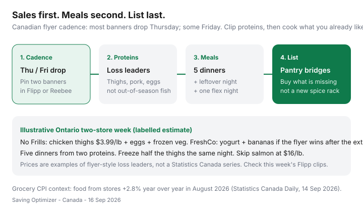

Food & Groceries · Canada
How to plan a week of meals from Canadian grocery flyers (loss leaders first)
Canadians still plan the menu first, then hunt for out-of-season salmon that was never on sale. That is a United States coupon habit wearing a Canadian flyer. Here, the cheap protein is printed on Thursday. The meal is whatever you already know how to cook with that protein.
This is a Canada-native flyer week: sales → meals → list. You use Flipp (or Reebee), the two banners you will actually visit, and a freeze plan so a $3.99/lb thigh pack does not become Wednesday regret. Keep the recipes boring on purpose.
Disclosure: Meal-kit trial offers and grocery gift cards are offer types that can sit beside a flyer week when you are travelling or exhausted. Saving Optimizer may earn a commission if we later add partner links. We do not currently claim partnerships with Flipp, Loblaw, Empire, or meal-kit companies. The workflow works without a click.
Key takeaways
- Flip the order: clip loss-leader proteins, then name five dinners, then write the list.
- Most Canadian flyers drop Thursday; treat Friday as a cleanup pass, not a second personality.
- Deep discounts look different by banner — No Frills chicken is not Metro’s “was/now” theatre.
- Pantry bridges (rice, spices you already own, frozen veg) stop you buying a new cuisine every week.
- Date-stamped context: food from stores was +2.8% year over year in August 2026 (Statistics Canada Daily, 14 Sep 2026). Flyer timing still moves the meat line more than waiting for CPI to “go back.”
Flip the order: sales → meals → list
Open the fridge first only to see what must be eaten by Wednesday. Then open Flipp. Pin two banners within a reasonable drive — usually your discounter plus the one store whose flyer you will honour if a protein is genuinely cheaper after the extra stop. Do not pin eight books. That is shopping as entertainment.
Clip three things, maximum six: a protein you will cook, produce you will finish, and a pantry staple you already use when the unit price is real. Then — and only then — write dinners. “Thighs + frozen broccoli + rice” is a meal plan. “Ottolenghi, but on a Tuesday” is a receipt.
Put this inside the Sunday block in the weekly grocery system. The flyer is step two, not a separate hobby.

Protein loss leaders: what deep discounts look like by banner
A loss leader is the item priced to get you in the door. In Canadian flyers that is usually chicken, pork, ground meat, eggs, or yogurt — not the $16/lb fish staring at you from the full-service banner.
| Banner family | Typical loss-leader proteins | Treat as a win when… |
|---|---|---|
| No Frills / Maxi / Superstore | Thighs, whole chicken, eggs, pork shoulder | Well below your price-book “won’t beat” line |
| FreshCo / Foodland | Chicken, ground beef events, dairy extras | Scene+ offer + shelf still beat a second trip |
| Food Basics / Super C | Meat family packs, eggs | You will freeze the extra the same night |
| Walmart | Rollbacks more than a classic flyer | Unit price wins; they will not match competitor ads |
| Full-service (Metro, Sobeys, Loblaws) | Featured cuts, “was/now” beef | Only if cheaper than the discounter after points |
If boneless thighs are in the $3–$5/lb neighbourhood and salmon is $14–$18, it is a thigh week. You can still eat well. Protein cost-per-gram lives in cheap high-protein meals. Price-match screenshots and four-unit caps live in the Flipp matching system.
Build 5 dinners + 2 flex nights from one Flipp session
- Pick one or two proteins from the clips. Repeating a protein is a feature. Variety is how produce dies.
- Map five dinners onto those proteins. Roast or sheet-pan → tacos or rice bowls → soup or pasta with the last bits. Lunch is leftovers.
- Name leftover night and flex night. Eggs, frozen dumplings, or a meal-kit trial if the week exploded. Flex is scheduled, not a Thursday Uber Eats spiral.
- Add produce that finishes. Cabbage, carrots, frozen veg, and bananas beat a clamshell of mixed greens with a death date of tomorrow.
- Write the list in store order. Protein and produce first. Centre aisles last, and only for pantry bridges.
GST/HST reminder: basic groceries are generally zero-rated. Snack foods and many beverages are not. A homemade lunch is a tax structure, not a personality.
Pantry bridges so you don’t buy a full new spice rack
Flyer meals fail when the protein is $8 and the supporting cast is $22 of harissa, coconut milk, and a herb you will use once. Keep a short bridge list: rice or potatoes, one onion, garlic, canned tomatoes, a fat you already own, frozen vegetables, and the two spices you actually reach for.
If the flyer is “Korean BBQ kit energy” and your cupboard is cumin and paprika, cook the cumin version. Store brands (No Name, Compliments, Great Value) are the bridge, not a new cuisine. The overview on cutting the grocery bill is the unit-price underneath this.
Freeze strategy for meat bought on flyer peaks
A family pack is only a deal if it becomes meal-size packs the same night. Divide raw chicken into dinner portions, label with the date and the planned meal (“tacos,” “soup”), and freeze flat. Ground meat in 400–500 g bricks. Pork in roast-plus-leftover packs.
Surplus meat is the same job: Flashfood or FoodHero proteins follow this freeze SOP, not the crisper drawer. Skip the pickup if you will not pack it tonight — details in surplus app comparison.
Cook-from-frozen or thaw in the fridge, not on the counter. Best-before on frozen meat is quality, not a poison date, but freezer burn is how a $4/lb win becomes chicken-flavoured ice.
Sample Ontario two-store flyer week
Labelled estimate for a two-adult GTA household that already shops No Frills and can reach a FreshCo without a highway adventure. Prices are flyer-shaped examples, not this week’s legal ads.
| Stop | Clip | Dinners it feeds |
|---|---|---|
| No Frills (main) | Chicken thighs family pack; eggs; frozen broccoli; rice | Sheet-pan thighs; taco bowls; soup from the carcass bits; leftover night |
| FreshCo (optional) | Large yogurt if cheaper after Scene+; bananas | Breakfasts and flex-night smoothies — skip if No Frills yogurt wins |
| Skip | Atlantic salmon feature at a full-service banner | Not this week. Put “fish” on the flex night only if Flashfood has frozen portions on the route |
If the FreshCo gap is $4 and the drive is 20 minutes each way, stay home. Two-stop math belongs next to the discount banner rotation and, once a month, the Costco vs No Frills split.
Tracking savings without spreadsheet burnout
Same night as the shop, five minutes. Circle anything that surprised you. Update five staples in a notes app: thighs, eggs, milk, oats, canned tomatoes — size, price, store, date. That is a price book. When next Thursday’s flyer is not cheaper than your book, you do not “stock up”; you walk past.
Once a month, glance at the meat line versus Statistics Canada’s household context: the 2023 Survey of Household Spending (Daily, 21 May 2025) put average food from stores at $8,659 and meat as a fat slice of that bill (Statistics Canada Plus, 24 Jul 2025, meat $1,544 in 2023). You do not need their average. You need four of your receipts.
Give the flipped order four weeks. Week one feels backwards. Week four is just how dinner happens. If the household wants school-lunch scale, continue with family grocery budgeting.
Sources & date stamps
- Statistics Canada, The Daily — Consumer Price Index, August 2026 (released 14 Sep 2026): food purchased from stores +2.8% year over year.
- Statistics Canada, The Daily — Survey of Household Spending, 2023 (released 21 May 2025): $8,659 food from stores.
- Statistics Canada Plus, “A breakdown of the average Canadian grocery bill” (24 Jul 2025): meat $1,544 in 2023.
- Banner flyer timing and Flipp clipping practice as used in our Flipp price-matching guides (16 Sep 2026) — confirm this week’s book in the app.
Frequently asked questions
When do Canadian grocery flyers come out?
Most national banners refresh Thursday. Some regional flyers and mid-week digital extras land Friday. Plan Sunday using the current book — not last week’s screenshots.
Should I meal plan before I open Flipp?
No. Clip proteins and produce first, then assign dinners you already cook. Picking a salmon recipe on Monday and buying it off-sale is how Canadian carts swell.
How many stores should a flyer week use?
One discounter is the default. Add a second stop only when a documented protein or dairy gap beats fuel, parking, and 30–45 minutes. Costco is a monthly bulk run, not a third Thursday trip.
Do I need a spreadsheet to track flyer savings?
No. Circle three surprises on the receipt and write five staple prices in a notes app. Spreadsheet burnout is how systems die in week two.
Are meal kits cheaper than flyer cooking?
Usually not for a household that already cooks. A trial box can cover a brutal week. It is a backup, not a grocery operating system. Compare the per-serving price to this week’s thighs and rice.